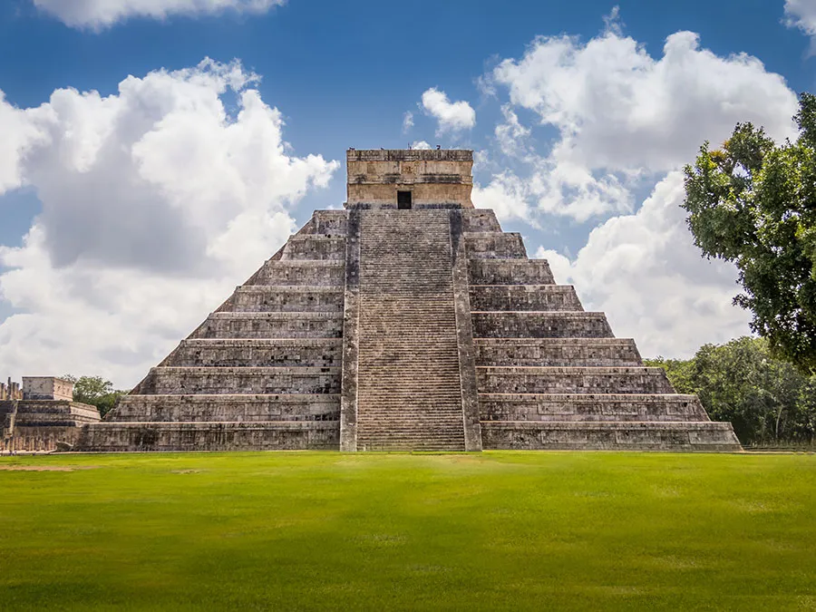
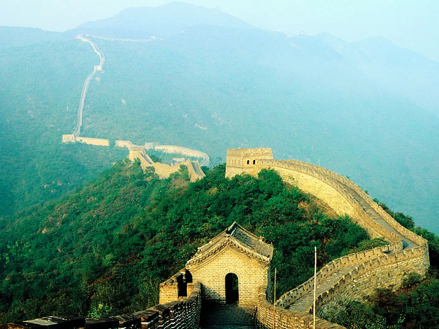

Seven Wonders Of the World
The Seven Wonders of the World, both ancient and modern, stand as testaments to the boundless creativity, ingenuity, and architectural prowess of humanity across different epochs and civilizations. From the iconic Great Pyramid of Giza, the sole survivor of the ancient wonders, to the contemporary marvels like the Great Wall of China and Christ the Redeemer statue in Brazil, each wonder encapsulates a unique narrative of human achievement and cultural significance. These wonders, whether ancient or modern, evoke a sense of awe and admiration, inviting exploration and contemplation of the remarkable feats accomplished by our ancestors and contemporaries alike. Whether constructed as monumental tombs, defensive fortifications, religious sanctuaries, or symbols of cultural identity, the Seven Wonders of the World collectively remind us of the enduring legacy of human creativity and the timeless quest for architectural excellence that transcends generations and geographical boundaries. As beacons of inspiration and admiration, these wonders continue to captivate the imagination of people around the globe, serving as reminders of the remarkable heights that human ambition and craftsmanship can reach when driven by passion, vision, and determination.
Taj Mahal
A masterpiece of Mughal architecture, the Taj Mahal is a symbol of enduring love and beauty. Commissioned by Emperor Shah Jahan in memory of his beloved wife Mumtaz Mahal, it took over 20,000 artisans and craftsmen to complete this exquisite white marble mausoleum. With its intricate carvings, majestic dome, and perfectly symmetrical gardens, the Taj Mahal is a UNESCO World Heritage Site and one of the most iconic landmarks in the world, captivating visitors with its timeless elegance and poignant romantic tale.
Colosseum
An enduring symbol of ancient Rome's architectural and engineering prowess, the Colosseum stands as the largest amphitheater ever built. Completed in 80 AD, this monumental structure could accommodate up to 80,000 spectators who gathered to witness gladiatorial contests, animal hunts, and theatrical performances. Despite centuries of neglect and damage, the Colosseum remains a testament to the grandeur and cultural significance of the Roman Empire, drawing millions of visitors each year to marvel at its enduring legacy.
Statue Christ the Redeemer
Perched atop the Corcovado mountain overlooking Rio de Janeiro, Christ the Redeemer is an iconic statue of Jesus Christ. Standing at 98 feet tall with arms outstretched, it symbolizes peace and welcomes visitors to the vibrant city below. Completed in 1931, this monumental statue has become a globally recognized symbol of Christianity and Brazilian culture, attracting millions of visitors annually.
Machu Picchu
Nestled high in the Andes Mountains, Machu Picchu is an ancient Incan citadel shrouded in mist and mystery. Built in the 15th century and abandoned during the Spanish conquest, it remained hidden until its rediscovery in 1911. With its terraced fields, intricate stone constructions, and panoramic vistas, Machu Picchu is a testament to the architectural and engineering prowess of the Inca civilization. Its enigmatic beauty and cultural significance make it one of the most awe-inspiring archaeological sites in the world.
Chichen Itza

Chichen Itza, located on the Yucatan Peninsula, was a major city of the Maya civilization. The site is renowned for its stunning pyramids, temples, and ball courts, with the most famous structure being the imposing El Castillo (the Temple of Kukulcan). This step pyramid demonstrates the Maya's advanced understanding of mathematics and astronomy, with its design aligning with the movements of the sun and casting shadows resembling a serpent descending during the equinoxes.
Petra
Carved into rose-colored sandstone cliffs, Petra is an ancient city that flourished as the capital of the Nabatean Kingdom. Its architectural marvels, including the iconic Treasury (Al-Khazneh) and the Monastery (Ad Deir), reflect the ingenuity of its inhabitants. Accessible only through a narrow canyon called the Siq, Petra's intricate rock-cut architecture and water management systems illustrate the advanced civilization that once thrived in this desert landscape.
Great Wall of China

Stretching over 13,000 miles, the Great Wall of China stands as a symbol of ancient defensive architecture. Constructed over centuries by various Chinese dynasties, it was designed to protect China from invasions and raids from nomadic tribes. Its massive stone and earthen fortifications traverse rugged terrain, offering breathtaking vistas and showcasing the strategic brilliance of its builders.